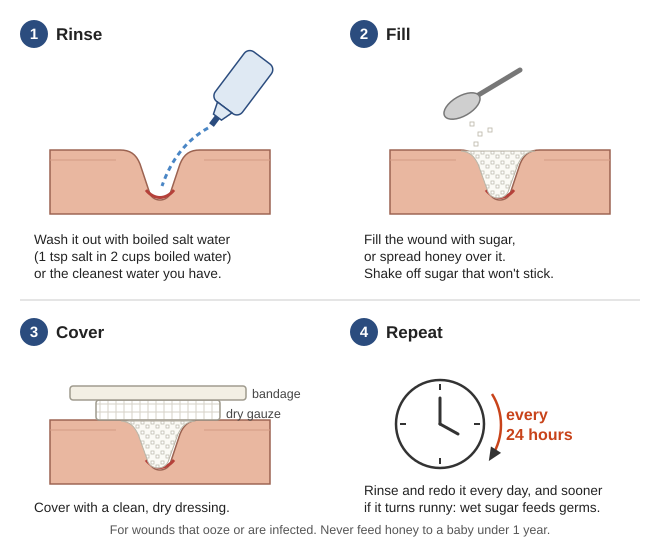
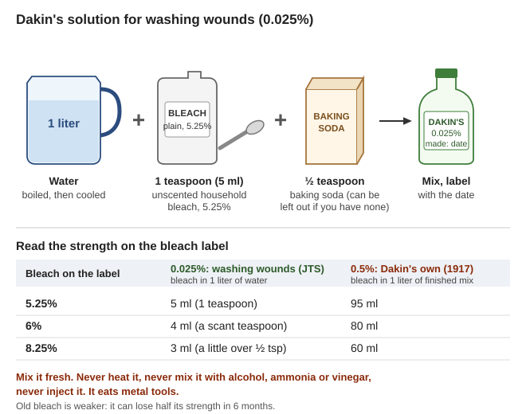
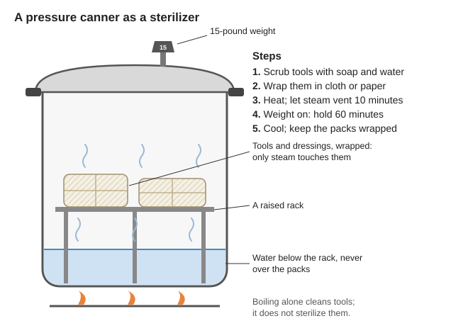

Guides › Health & medicine · Emergency · Index A–Z
For a household, or a village health worker, when no new medicines are being made and the old ones are running out: what you can make or use yourself, rated honestly. Most of what saves lives is plain: a drink of salt and sugar, lots of boiled water on a wound, sugar and honey, diluted bleach, soap and a pressure canner. Plant medicines help less than people hope, and a few kill. The books are in Medical\Medicinal-Plants (the WHO monographs on medicinal plants, Vols 1–4: the evidence, plant by plant), Medical\Where There Is No Doctor (WTND), Medical\Field-Care (the Joint Trauma System wound guidelines, JTS, and Dakin and Dunham's 1917 Handbook of Antiseptics), Medical\Medicines (MSF Essential Drugs) and Medical\Manuals-PDF; the old recipe books are in Southern-Oregon\Homestead-Skills. A line that no book backs says (rule of thumb). How medicines were first discovered and made in factories, for a community that wants to make them again one day: How antibiotics came to be.
Ratings: ✅ works (good evidence) · ⚠️ weak or uncertain · ⛔ dangerous.
The short version
- ✅ Diarrhea kills by drying people out, and the cure is a drink: 1 liter of clean water, ½ level teaspoon of salt and 8 level teaspoons of sugar, in sips every 5 minutes (WTND, p. 152).
- ✅ Wounds: wash them out with lots of boiled water and leave dirty ones open. A wound that oozes gets sugar or honey under a dry dressing, changed every day (JTS, p. 16).
- ✅ Weak bleach (Dakin's solution) washes infected wounds; strong bleach harms them. The recipe and strengths are below.
- ✅ A pressure canner is a sterilizer: tools on a rack above the water, 60 minutes (JTS, p. 18).
- ✅ Alcohol only on unbroken skin, and only at 60–80% (MSF, p. 654). Never into a wound (WTND, p. 84).
- ⚠️ Willow bark works, but weakly. A full day's dose puts about as much aspirin-like medicine in the blood as 87 mg of aspirin (WHO monographs vol 4, p. 318); one aspirin dose is 300 to 600 mg (WTND, p. 380).
- ⚠️ Most plant medicines have no clinical proof, and their strength changes from plant to plant. The few with proof are in the table below.
- ⛔ Never: mould "penicillin" by mouth or injection, foxglove, ergot, comfrey or arnica by mouth, poppy or opium, and never inject anything that was not made sterile.
⚠️ Before you give any dose
- The doses here are the doses printed in the library's books, for when no doctor or pharmacist can be reached. They are not a prescription. Where two books differ, both are shown; where no book gives a dose, this guide says so.
- Be sure of the plant. Foxglove leaves have been mistaken for comfrey, with deaths (Medical guide). Photograph it with the plant identifier under Tools, then check every feature in a book.
- A plant's strength is not fixed. Willow bark holds 0.5% to 10% of its active part, depending on the kind of willow (WHO vol 4, p. 312). Start at the low end of a dose and watch.
- Most plant doses are for adults. Many are not for pregnancy, breastfeeding or young children: read the last column of each table.
- Plants mix with medicines. St John's wort lowers the blood level of warfarin, digoxin, HIV medicines and others (WHO vol 2, pp. 163–164).
- Anything made at home goes by mouth or on the skin, never by injection: "It is more dangerous to inject medicine than to take it by mouth" (WTND, p. 65).
- Real medicines first for serious infections. For pneumonia, tetanus, typhoid, TB and fever after birth, "do not lose time trying to treat them first with home remedies only" (WTND, p. 1).
- Write down what you gave, how much, when, and what happened.
Listed from what saves the most lives.
| What | For | Rating | More |
|---|---|---|---|
| Rehydration drink (salt, sugar, water) | Diarrhea, cholera, big burns | ✅ | Rehydration drink |
| Lots of boiled water to wash a wound | Stopping wound infection | ✅ | Wound care |
| Soap and water | Hands, skin, dirty wounds | ✅ | Wound care |
| Boiled salt water | Washing and covering wounds | ✅ | Wound care |
| Sugar or honey dressing | Oozing or infected wounds; honey on burns | ✅ | Wound care |
| Dakin's solution (weak bleach and baking soda) | Dirty and infected wounds | ✅ | Wound care |
| Hot compresses | Infected wounds, boils | ✅ | Wound care |
| Pressure canner or oven | Sterilizing tools and dressings | ✅ | Sterilizing |
| Alcohol, 60–80% | Skin before a needle; hands | ✅ on skin, ⛔ in a wound | Alcohol |
| Iodine | Skin; a single wash of a small wound | ✅ on skin, ⚠️ in a wound | Wound care |
| Boiling | Tools | ⚠️ cleans, does not sterilize | Sterilizing |
| Maggots | Dead flesh in a wound, when nothing else is left | ⚠️ | Wound care |
| Willow bark | Pain, fever | ⚠️ weak | Pain and fever |
| Plants proven for one use (valerian, chamomile, garlic, ginger, St John's wort, cranberry, feverfew, echinacea) | That one use | ✅ | Plants |
| Plants with tradition only (thyme, peppermint, elder flower, calendula, yarrow and others) | Mild complaints | ⚠️ | Plants |
| Home-made penicillin, foxglove, ergot, comfrey or arnica by mouth, poppy | ⛔ | Dangerous to try | |
| Anything injected that was not made sterile | ⛔ | Dangerous to try |
Penicillin was first found in a mould, so people try to grow their own on bread or fruit. It does not work, for four reasons:
Real antibiotics need a laboratory, a known strain and a way to measure and purify the drug. How that was done, and what a community would need to do it again: How antibiotics came to be. Until then, the wound care below, and the antibiotics you have, stored well and used only when needed (Medical guide), are what you have.
"Giving lots of liquids to a child with diarrhea is more important than any medicine" (WTND, p. 46). The signs of drying out and how to give it are in the Medical guide.
| Recipe | In 1 liter of clean water | Book |
|---|---|---|
| Sugar drink ✅ | ½ level teaspoon of salt and 8 level teaspoons of sugar. Taste it before the sugar: "less salty than tears" | WTND, p. 152 |
| WHO home recipe ✅ | 0.5 level teaspoon of salt and 6 level teaspoons of sugar | JTS burns, p. 7 |
| Cereal drink ✅ | ½ teaspoon of salt and 8 heaping teaspoons (2 handfuls) of powdered rice or other cereal, boiled 5 to 7 minutes. It spoils in a few hours in hot weather | WTND, p. 152 |
How to stop bleeding, when to close a wound and when to leave it open, and bites: Field Care. This section is what you can make yourself to keep a wound clean.
✅ For a wound that oozes a lot or is infected. Honey and sugar draw water out of germs: honey's "high osmotic potential" and the peroxide it makes when diluted stop bacteria growing (FAO Bees, p. 119).

A sugar or honey dressing for a wound that oozes (JTS, p. 16; WWHND, p. 306; a drawing made for this guide).✅ Weak bleach, buffered with baking soda, washes "large, very dirty, or infected wounds" and helps against fungal infection (JTS, p. 4). It also helps dissolve dead tissue (Dakin, p. 27).
The JTS recipe (p. 4):
Two strengths, and a muddle in the book:
Bleach today is stronger, and it weakens on the shelf. Read the label. Plain bleach "can lose up to half its strength after 6 months" (USU Food Storage, p. 16). The amounts below are the dilution rule (parts of water = bleach % ÷ % wanted − 1, MSF Cholera, p. 226) worked out per liter:
| Bleach strength on the label | 0.025% (JTS: washing wounds) | 0.5% (Dakin 1917) |
|---|---|---|
| 5.25% | 5 ml (1 teaspoon) in 1 liter | 95 ml in a liter of mix |
| 6% | 4 ml (a scant teaspoon) | 80 ml |
| 8.25% | 3 ml (a little over ½ teaspoon) | 60 ml |

The JTS recipe for washing wounds, and the amounts for other bleach strengths (JTS, p. 4; Dakin, p. 25; a drawing made for this guide).✅ Steam under pressure is "the preferred sterilization technique" (JTS, p. 17). Steam sterilizes at 121 °C (250 °F) in 30 minutes; in a pressure cooker of unknown temperature, JTS gives 60 minutes, with the tools on a wire rack so "only steam" touches them (pp. 17–18).
A canner kept for this, and dressings sterilized ahead in sealed packs, are worth having now (Field Care).

Tools on a rack in steam, not in the water (JTS, pp. 17–18; USDA, p. 1-20; a drawing made for this guide).Without medicine first: for a high fever take off the covers and clothing (WTND, p. 8) and soak the body with water; for a sprain, cold water the first day and hot soaks after; hot compresses for stiff, sore muscles and joints (WTND, pp. 47–48). Drink plenty, and rest.
"Is it true that tea made from willow bark will help bring fever down and stop pain? True. It helps" (WTND, p. 8). The WHO monograph lists clinical evidence for "fever and pain, and ... mild rheumatic conditions" (vol 4, p. 312).
| What the books give | |
|---|---|
| Dose (adult) | "6–12 g of powdered drug material as a decoction (corresponding to 120–240 mg of total salicin) in two divided doses" a day (WHO vol 4, p. 320). The Air Force handbook boils "eight to ten six-inch stalks in two cups of water until water turns into tea" (AFH 10-644, p. 51), with no weight |
| Strength | Salicin, the aspirin-like part, runs from 0.5–1% in white willow to 2–10% in crack willow (WHO vol 4, p. 312). No book gives it for the willows growing near you |
| How strong | 240 mg of salicin gave the blood about as much salicylate as 87 mg of aspirin (WHO vol 4, p. 318). In one trial in rheumatoid arthritis it did no better than a dummy pill (same page) |
| Don't use if | Allergic to aspirin, or asthma from it; pregnant or breastfeeding; bleeding problems; under 12, because of Reye's syndrome (WHO vol 4, pp. 318–319); on blood thinners (p. 319) |
So willow takes the edge off a fever or an aching joint; it does not replace a stored bottle of aspirin, paracetamol or ibuprofen (doses: Chronic illness). The monograph's bark is from young branches (WHO vol 4, p. 309).
| What | Rating | What the books say |
|---|---|---|
| Feverfew to prevent migraine | ✅ | Clinical evidence for "Prevention of migraine" (WHO vol 2, p. 320). The dose is given only as 0.2–0.6 mg of parthenolide a day (p. 325), which can't be measured at home: no book gives a number of leaves. Not in pregnancy (p. 324); mouth ulcers mean stop (p. 325) |
| Peppermint oil rubbed on for a headache | ✅ | Clinical evidence "Externally for treatment of myalgia and headache", as 5–20% oil in a cream or oil (WHO vol 2, pp. 190, 195). Never on a baby's or small child's face (p. 194) |
| Oil of cloves for tooth pain | ⚠️ | Dentists soak a bit of cotton in it, "damp but not wet", for a painful socket (Where There Is No Dentist, p. 117). WHO lists toothache under tradition, not trials (vol 2, p. 48) |
| Arnica on bruises and sprains | ⚠️ outside, ⛔ by mouth | Outside only, never on broken skin; "A fatal case of poisoning following the ingestion of 70.0 g of a tincture" (WHO vol 3, p. 83) |
Poppy and opium preparations are illegal to make in the US, and no one can know their strength at home (rule of thumb). With all of them, from opium to morphine, "Respiratory depression is the most dangerous and can be fatal" (Ship's Medicine Chest, p. 113). This guide gives no way to make them. Morphine from a pharmacy, and its doses: Chronic illness.
The WHO monographs sort each plant's uses three ways: "supported by clinical data" (trials in people), "described in pharmacopoeias" (official books of medicines) and "folk medicine, not supported by experimental or clinical data" (vol 1, pp. 89–90). Here ✅ means trials in people; ⚠️ means only pharmacopoeias or tradition. These plants grow, or can be grown, in a temperate climate like the Illinois Valley's; ginger is from the pantry. Doses are for adults unless a column says otherwise; how to make the teas: below.
Proven for one use (✅ for that use only)
| Plant (part) | Proven for | Dose the WHO monograph gives | Don't use if |
|---|---|---|---|
| Valerian (root) | Sleep and nervous unrest: "a mild sedative and sleep-promoting agent" (vol 1, p. 272) | "2–3 g drug per cup by oral infusion, 1–5 times per day, up to a total of 10 g" (p. 275) | Pregnant or breastfeeding (p. 273). Long use: headaches, unease, poor sleep (p. 274) |
| Chamomile (flowers) | Upset stomach, bloating, gas; restlessness and mild sleeplessness; outside, sore skin, mouth and gums (vol 1, p. 89) | Adult: "average daily dose 2–8 g, 3 times a day"; child: "2 g, 3 times daily"; gargles and compresses a 3–10% infusion (p. 92) | Children under 3 (same page); allergy to ragweed, asters or chrysanthemums (p. 91) |
| Garlic (bulb) | High cholesterol, with diet; maybe mild high blood pressure (vol 1, p. 20). Infections only in pharmacopoeias (⚠️). WTND for pinworms: 4 crushed cloves in a glass of water, juice or milk, daily for 3 weeks (p. 12) | Fresh garlic 2–5 g a day, with food (p. 26) | Large amounts raise bleeding after surgery (p. 25) |
| Ginger (root, from the pantry) | Preventing nausea and vomiting: travel sickness, after surgery, in pregnancy (vol 1, p. 281) | Travel sickness, adults and children over 6: "0.5 g, 2–4 times daily"; indigestion 2–4 g a day (p. 285) | None listed (p. 283) |
| St John's wort (flowering tops) | "mild and moderate depressive episodes" (vol 2, p. 153) | "2–4 g crude drug" a day (p. 165). It takes 2–4 weeks to work; no better after 6 weeks, stop and seek help (p. 163) | With other medicines: it lowers the level of warfarin, digoxin, theophylline, cyclosporin and HIV medicines, and with antidepressants such as fluoxetine causes serotonin excess (pp. 163–164); it may make the birth-control pill fail (rule of thumb). Stay out of strong sun (p. 163) |
| Cranberry (fruit, juice) | Preventing bladder infections in adults; trials in children were negative (vol 4, p. 153) | Prevention: "30–300 ml of a 30% pure juice product" a day; treatment 360–960 ml (p. 163) | Children; kidney stones or weak kidneys only with advice (p. 162) |
| Feverfew (leaves) | Preventing migraine (vol 2, p. 320) | Given only as parthenolide (see Other pain helpers) | Pregnancy; allergy to the daisy family (p. 324) |
| Echinacea (root, or the flowering plant of E. purpurea) | "supportive therapy for colds and infections of the respiratory and urinary tract" (vol 1, p. 131): a help, not a cure | Root: about 1 g (½ teaspoon) powdered, 150 ml hot water poured over, steeped 10 minutes, three times a day (p. 133). E. purpurea juice: 6–9 ml a day for no longer than 8 weeks (p. 142) | TB, HIV, autoimmune illness; allergy to the daisy family (p. 132) |
| Cascara (aged bark) | "Short-term treatment of occasional constipation" (vol 2, p. 262) | "0.3–1.0 g crude drug in a single dose", at bedtime (p. 266). Books differ: WTND calls cascara one of the "irritating purges that often do more harm than good" (p. 16); try water and fiber first | Fresh bark "may cause severe vomiting" (p. 266). Not under 10, in pregnancy or breastfeeding, with belly pain or vomiting, or for over 2 weeks (pp. 263–264) |
Tradition and pharmacopoeias only (⚠️: may help, no trials)
| Plant (part) | Used for | Dose the WHO monograph gives | Don't use if |
|---|---|---|---|
| Thyme (leaves and flowers) | Coughs, bronchitis; gargle for sore throat (vol 1, p. 262) | "1–2 g of the dried herb ... as an oral infusion several times a day", adults and children from 1 year; under 1 year 0.5–1 g; gargle: a 5% infusion (p. 264) | Pregnant or breastfeeding (p. 263) |
| Peppermint (leaves) | Indigestion, gas, colic (vol 2, p. 202) | "pour 150 ml hot water over 1.5–3.0 g (one tablespoon) dried leaves, steep for 10 minutes", three times a day between meals (p. 204) | Gallstones; pregnancy, breastfeeding or children, unless with medical advice (p. 203) |
| Lemon balm (leaves) | Sleep and stomach (tradition); a cream of it is proven for cold sores (vol 2, p. 183) | "1.5–4.5 g crude drug per cup several times daily" (p. 186) | By mouth: pregnancy, breastfeeding or children, unless with medical advice (p. 185) |
| Elder (flowers) | Fever and chills, colds (vol 2, p. 272) | "3–5 g as an infusion (preferably taken hot) three times daily" (p. 274) | Pregnancy, breastfeeding or children, unless with medical advice (p. 273) |
| Calendula, pot marigold (flowers), outside | Small cuts, sore skin and mouth, leg ulcers (vol 2, p. 39) | Compress: "1–2 g/150 ml" infusion; ointment 2–5% (p. 42) | Allergy to the daisy family (p. 41) |
| Yarrow (flowering tops) | Poor appetite, colds, upset stomach, fever; outside, skin (vol 4, p. 183). The Army manual uses its leaves on a cut to stop bleeding (FM 21-76, p. 128) | "1–2 g in 150 ml boiled water for 10–15 minutes, three times daily between meals" (p. 188) | Pregnancy, stomach ulcers, gallbladder disease, daisy-family allergy (p. 187) |
| Bearberry, uva-ursi (leaves) | A mild bladder antiseptic (vol 2, p. 345) | "3 g crude drug in 150 ml water as an infusion or cold macerate, up to three or four times daily"; drink plenty (p. 349) | Pregnancy, breastfeeding, under 12, kidney disease; not for long (p. 347) |
| Hops (cones) | Nervous tension, sleeplessness (vol 3, p. 240) | "0.5 g in 150 ml of water" a dose (p. 243) | Allergy to it; makes you drowsy (p. 242) |
| Lavender (flowers) | Restlessness, sleeplessness, nervous stomach (vol 3, p. 232) | "1–2 teaspoonfuls per cup, three times per day" (p. 234) | Pregnancy (p. 233) |
| Dandelion (whole plant) | Passing water, appetite, indigestion; no clinical information (vol 3, p. 331) | "boil 3–4 g of whole plant in 150 ml of water", three times a day (p. 335) | Blocked bile duct or bowel, gallbladder attack (p. 334) |
| Aloe (gel from inside the leaf), outside | Minor burns and wounds (vol 1, p. 45; WTND, p. 13); a houseplant in cold country | "Fresh gel" (p. 48) | Allergy to the lily family (p. 47) |
Wild plants of this region with medicinal uses. The USFS guide covers the Pacific Northwest; the county's soil survey finds willows and Oregon grape in Josephine County itself:
| Plant | Where it grows here | Notes |
|---|---|---|
| Willows | Wet ground: drainageways and alluvial fans, with sedges and grasses (Josephine soil survey, p. 66) | No book gives the strength of the local kinds; the WHO figures are for European willows |
| St John's wort, "Klamath weed" | Sunny roadsides, pastures and old fields (USFS Special Forest Products, p. 81); "an aggressive weed" of dry, gravelly soils (AIB 415, p. 101) | Pick the top of the flowering stems, June to early August (USFS, p. 81). It poisons stock (AIB 415, p. 100) |
| Yarrow | Open forest, dry meadows and roadsides (USFS, p. 27) | "May cause dermatitis; not recommended for use during pregnancy" (same page) |
| Cascara | Lower mountain slopes and forest edges (USFS, p. 73) | The bark is taken mid-April to the end of August; the stump resprouts (same page). Fresh bark makes people vomit (WHO vol 2, p. 266): let it age before use (rule of thumb) |
| Bearberry, kinnikinnick | Dry, rocky slopes, after fire (USFS, p. 37) | Slow to grow back: take a little from the edge of a patch (same page) |
| Blue elderberry | Open hillsides, roadsides and fence rows (USFS, p. 111) | The flowers make the WHO's tea. The berries only cooked: "All varieties of raw elderberries should be cooked before consuming" (OSU EM 9446, p. 4) |
| Tall Oregon grape | Douglas-fir and madrone forest on granite soils (Josephine soil survey, p. 100) | Its roots are sold for medicine (USFS, p. 45). Its cousin barberry has no trials in people (WHO vol 4, p. 33) ⚠️ |
| Wild valerians | Moist mountain meadows and streambanks (USFS, p. 129) | The WHO evidence is for garden valerian, not these; grow that instead |
| Arnica | Shaded high meadows and conifer forest (USFS, p. 39) | Outside only |
Grow the proven ones (valerian, chamomile, feverfew, garlic) from seed in a garden bed, where you are sure what they are (rule of thumb).
📚 Go deeper: WHO monographs Vol 1 — and Vols 2, 3 and 4: every plant's evidence, doses and warnings, with an index of all four in Vol 4 (p. 395); WTND, pp. 12–13 — useful plants and how to judge a home remedy.
The kinds (FM 21-76, p. 127):
Weigh it. The WHO doses are in grams. A small kitchen or postal scale is worth more than any guess by the spoonful (rule of thumb).
Why the dose changes from plant to plant:
Drying and keeping herbs: valerian root is "carefully dried at a temperature below 40 °C" (WHO vol 1, p. 267). Store dried herbs like ginger: "in well-closed containers (not plastic) which prevent access of moisture", "protected from light in a cool, dry place" (p. 281). Label each jar with the plant, the part and the date, and pick again each year (rule of thumb).
| Don't | Why |
|---|---|
| Mould "penicillin", by mouth or injected | No dose, other moulds' poisons, allergic shock (above) |
| Foxglove (digitalis) for the heart | Its heart poisons stay "active in the fresh, dried, or even boiled plant" (WSU Poisonous Plants, p. 28). Its medicine, digoxin, is kept at 0.8–2 micrograms per liter of blood, checked by a laboratory, and poisoning becomes likely from 1.5 to 3 (WHO Formulary for Children, p. 336): a margin no leaf can be measured to |
| Ergot (the dark fungus on rye and grasses) | Ergot in hay poisons animals: a cow loses the skin and flesh in a ring round the lower leg, down to the bone (USDA Diseases of Cattle, p. 50). The medicine made from it, ergometrine, "Used the wrong way before the baby is born, they can cause the death of the mother or the child in her womb" (WTND, p. 266). Never eat grain with ergot in it |
| Comfrey by mouth (tea, syrup, leaves) | It harms the liver; death "may ensue from 2 weeks to more than 2 years after poisoning", and in 2001 the FDA told makers to take comfrey products meant to be swallowed off the market (FDA Bad Bug Book, p. 243) |
| Arnica by mouth | A death from 70 g of tincture (WHO vol 3, p. 83) |
| Angel's trumpet, jimsonweed and other poisonous nightshades | WTND gives drops of angel's trumpet for cramps but warns it "is very poisonous if you take more than the recommended dose" (p. 12); of jimsonweed "all parts of the plant are toxic" (WSU, p. 30). A home soak's strength can't be known (rule of thumb) |
| Poppy and opium | Illegal, and no way to know the dose; overdose stops the breathing (Ship's, p. 113) |
| Anything injected that was not made sterile | Abscess, fever, allergic shock (WTND, pp. 68–70); bleach in a vein destroys blood (Dakin, p. 27) |
| Alcohol, iodine tincture or strong bleach poured into a wound | Alcohol and tincture of iodine "damage the flesh and make healing slower" (WTND, p. 84); Dakin kept his bleach at 0.5% or weaker, because stronger irritates (p. 25) |
The deadly ones here:
| Book says | Do this instead |
|---|---|
| Rinse a wound with "fresh urine if water is not available" (FM 21-76, p. 40); urine "may well be the most nearly sterile of all fluids" (AFH 10-644, p. 51) | The cleanest water you have, boiled 3 minutes and cooled (JTS, p. 4) |
| For worms: "Kerosene. Drink 2 tablespoons", or "Eat 1 to 1 1/2 cigarettes" (ST 31-91B, p. 177) | Never drink fuel or eat tobacco (rule of thumb). Worm medicines and their doses: WTND, p. 375; for pinworms, garlic may help (WTND, p. 12) |
| For diarrhea, eat "white clay or campfire ashes" (FM 21-76, p. 128), or powdered chalk, charcoal or dried bones (ST 31-91B, p. 176) | The rehydration drink: "if enough liquid is given, no medicine is usually needed" (WTND, p. 46) |
| "Fuller's Cough Syrup": comfrey root and plantain juice boiled with sugar, "1 to 2 tablespoonsful 3 or 4 times per day" (Lee's, p. 44) | No comfrey by mouth (FDA Bad Bug Book, p. 243). For a cough, a thyme tea (WHO vol 1, p. 264) |
| Arnica tincture by mouth, "10 to 30 drops", "in diarrhoea, dysentery, gout" (Lee's, p. 46) | "Internal use of Flos Arnicae ... is not recommended. For external use only" (WHO vol 3, p. 83) |
| For toothache, a paste of opium, henbane and belladonna, or carbolic acid in the tooth (Household Discoveries, p. 503) | Oil of cloves on cotton (Where There Is No Dentist, p. 117), and aspirin or paracetamol |
| Ointments of mercury, lead plaster or "red precipitate" (a mercury salt) for skin trouble (Henley's, p. 488; Lee's, p. 55) | Soap and water; keep the skin clean, dry and in the sun (FM 21-76, p. 41) |
| "Honey can be regarded as a good food for both infants and adults" (USDA AH 335 (1980), p. 88) | "Children under 1 year old should never be fed honey" (FDA Bad Bug Book, p. 108) |
| Dakin's solution "can be stored", diluted once more 1 to 10 (JTS, p. 4) | Make it fresh, at the strength in the table above (Dakin's solution) |
🖼️ = drawings in the books on this drive; the plain links open photos in the offline Wikipedia.